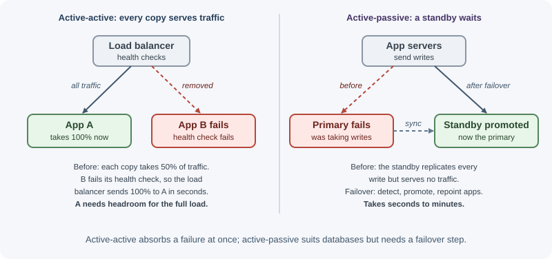
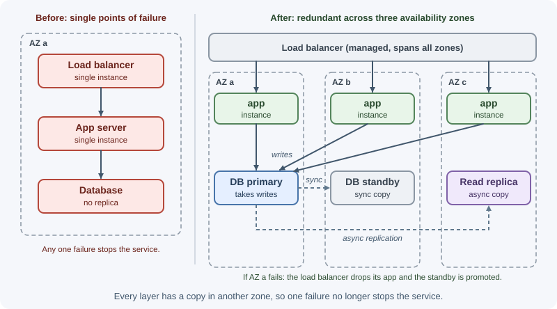

Availability and Reliability¶
Users judge a system first by whether it works when they need it. Availability measures how much of the time a service is usable, reliability measures how consistently it does the right thing, and durability measures whether data, once saved, stays saved. This page explains how these are measured, what makes systems fail, and the design techniques that keep them running through failures.
Why it matters¶
- Downtime costs money and trust. An hour of checkout outage is lost revenue; repeated outages push customers to competitors.
- Failures are constant at scale. Disks die, servers reboot, networks partition, deployments go wrong, and whole data centers lose power. A system with hundreds of machines sees some failure every day.
- Every extra "nine" costs more. Going from 99.9% to 99.99% availability usually means more redundancy, more automation, and more engineering time, so the target must match the business need.
- Reliability is a design property, not something added after launch. Single points of failure and missing timeouts are architectural decisions.
Real-world usage¶
- GitHub's October 2018 incident. A 43-second loss of connectivity between GitHub's US East Coast network hub and its primary East Coast data center caused its Raft-based failover tool (Orchestrator) to move MySQL writes to the West Coast. The brief partition led to 24 hours and 11 minutes of degraded service, showing how automated cross-data-center failover can turn a short network fault into a long recovery (GitHub blog).
- Netflix Chaos Monkey. Netflix built Chaos Monkey to randomly terminate instances in production so that engineers build services that tolerate instance failures (Chaos Monkey documentation).
- Google's error budgets. Google SRE manages release velocity with error budgets: as long as a service meets its SLO, releases continue; when SLO violations use up the budget, releases are temporarily halted and effort shifts to reliability (Google SRE book).
- AWS static stability. AWS runs many services as stateless fleets across three or more Availability Zones and overprovisions so that the remaining zones can carry the load if one is impaired: with three zones, it overprovisions by 50 percent (AWS Builders' Library).
- Amazon S3's design targets. S3 Standard is designed for 99.999999999% durability and 99.99% availability of objects over a year, a clear example of durability and availability being separate goals (Amazon S3 documentation).
Popular tools and providers: chaos engineering with AWS Fault Injection Service, Chaos Mesh, LitmusChaos, and Gremlin; resilience libraries such as resilience4j (Java), Polly (.NET), and opossum (Node.js circuit breaker); health checks and self-healing with Kubernetes probes and cloud load balancers; SLO tracking in Prometheus/Grafana, Datadog, and similar tools.
How it works¶
Availability, reliability, and durability¶
| Concept | Question | Typical measure | Example |
|---|---|---|---|
| Availability | Is the service up and responding when called? | Percentage of time (or of requests) served successfully | 99.95% of requests succeed this month |
| Reliability | Does it perform correctly, without failure, over time? | Error rate, mean time between failures | Orders are never charged twice |
| Durability | Once data is stored, is it kept without loss? | Probability of losing data per year | Object storage designed for 99.999999999% (11 nines) durability |
They are related but different: a system can be available but unreliable (it responds quickly with wrong data), or durable but unavailable (your data is safe, but the service is down for an hour).
Availability is often measured in one of two ways:
- Time-based: uptime / (uptime + downtime).
- Request-based: successful requests / valid requests. This is more accurate for services that are partly degraded rather than fully up or down.
The nines¶
Downtime allowed by an availability target (using a 365-day year and a 30-day month):
| Availability | Downtime per year | Downtime per month (30 days) | Common name |
|---|---|---|---|
| 99% | 3.65 days | 7.2 hours | "two nines" |
| 99.5% | 1.83 days | 3.6 hours | |
| 99.9% | 8.76 hours | 43.2 minutes | "three nines" |
| 99.95% | 4.38 hours | 21.6 minutes | |
| 99.99% | 52.6 minutes | 4.32 minutes | "four nines" |
| 99.999% | 5.26 minutes | 25.9 seconds | "five nines" |
| 99.9999% | 31.5 seconds | 2.6 seconds | "six nines" |
At four nines, a single manual recovery that takes 10 minutes uses more than the whole month's budget. High targets require automatic detection and recovery.
Availability of combined components¶
In series (a request needs every component), availabilities multiply:
Load balancer (99.99%) -> App (99.9%) -> Database (99.9%)
Total = 0.9999 x 0.999 x 0.999 = 0.9979 -> about 99.8%
Each dependency on the critical path lowers the total. A service cannot be more available than the things it synchronously depends on.
In parallel (redundant copies, any one is enough), the system fails only if all copies fail:
Two independent app instances at 99% each:
Total = 1 - (1 - 0.99)^2 = 1 - 0.0001 = 99.99%
This assumes independent failures. Two instances in the same rack, on the same power supply, running the same buggy release, fail together. Real redundancy needs independence: different hosts, availability zones, and staggered deployments.
SLI, SLO, and SLA¶
- SLI (service level indicator): a measured number, such as "proportion of requests answered successfully in under 300 ms".
- SLO (service level objective): the target for an SLI over a window, such as "99.9% of requests succeed in under 300 ms over 30 days". An internal engineering goal.
- SLA (service level agreement): a contract with customers that states consequences (credits, refunds) if a level is missed. SLAs are set looser than SLOs so the team has a margin.
- Error budget: 100% minus the SLO. With a 99.9% SLO, 0.1% of requests may fail each month. While budget remains, teams can ship faster; when it runs out, they focus on reliability.
See logging and monitoring for how to measure them.
MTBF, MTTR, and friends¶
| Metric | Meaning |
|---|---|
| MTBF (mean time between failures) | Average time a system runs before failing |
| MTTD (mean time to detect) | Average time until someone or something notices the failure |
| MTTR (mean time to recovery/repair) | Average time from failure to restored service |
Availability = MTBF / (MTBF + MTTR)
MTBF = 30 days (43,200 min), MTTR = 60 min -> 43,200 / 43,260 = 99.86%
Same MTBF, MTTR = 5 min -> 43,200 / 43,205 = 99.99%
Preventing every failure is impossible; shortening recovery (fast detection, automatic failover, quick rollbacks) often improves availability more cheaply than making failures rarer.
Redundancy¶

| Model | How it works | Failover time | Cost | Example |
|---|---|---|---|---|
| Active-active | All copies serve traffic; a load balancer spreads requests | Near zero (others absorb the load) | Each copy must handle extra load when one fails | Stateless app servers behind a load balancer |
| Active-passive (hot standby) | A standby runs and stays in sync, but takes no traffic until promoted | Seconds to minutes | Standby capacity is idle | Database primary with a synchronous replica |
| Warm standby | A scaled-down copy runs and can be scaled up | Minutes | Lower | A small copy of the stack in another region |
| Cold standby | Infrastructure is defined but not running; restored from backups | Hours | Lowest | Rebuild from infrastructure-as-code plus backups |
N+1 means running one more instance than the load requires, so losing any one still leaves enough capacity. N+2 survives a failure during maintenance.
Failover¶
Failover moves traffic or a role from a failed component to a healthy one.
- Detection: health checks, heartbeats, or a consensus protocol notice the failure.
- Decision: automatic (by the load balancer, a cluster manager, or a consensus election) or manual (an operator decides).
- Switch: route traffic to the healthy copy, or promote a replica to primary.
- Recovery: repair or replace the failed component and restore redundancy.
Pitfalls:
- Split brain: two nodes both believe they are the primary and accept writes. Consensus-based elections and fencing (cutting off the old primary) prevent it.
- False positives: an overloaded but healthy node is declared dead, failover adds load elsewhere, and failures cascade.
- DNS caching slows failover based on DNS changes; clients keep using old addresses until the TTL expires. See DNS.
- Untested failover often fails when needed. Practice it.
Databases are the hardest part; see MongoDB replication for how replica sets elect a new primary.
Single points of failure¶
A single point of failure (SPOF) is any component whose failure takes the whole service down. Common ones:
- One database primary with no replica or tested failover.
- One load balancer, NAT gateway, or VPN tunnel.
- Everything in one availability zone or one region.
- One DNS provider or one certificate that expires unnoticed.
- A shared configuration, authentication, or secrets service that every request depends on.
- A cron job that runs on exactly one server.
- One person who knows how to deploy or restore.
Walk through each request path and ask, "what happens if this disappears?"
Health checks¶
Load balancers and orchestrators decide where to send traffic, and whether to restart instances, based on health checks.
| Check | Answers | On failure |
|---|---|---|
| Liveness | Is the process alive and not stuck? | Restart the instance |
| Readiness | Can it serve traffic right now (started, dependencies reachable, not shutting down)? | Stop sending it traffic, but do not restart it |
| Deep / dependency check | Are the database, cache, and key APIs reachable? | Alert or degrade, carefully |
Keep liveness checks shallow. If liveness fails whenever the database is slow, every instance restarts at once during a database incident, turning a partial problem into a total outage. See load balancing.
Availability zones and regions¶

- An availability zone (AZ) is one or more data centers with independent power, cooling, and networking, close enough to others in its region for low-latency replication.
- Multi-AZ deployments (instances and database replicas spread across at least two or three AZs) survive a data center failure. This is the standard baseline for production on cloud platforms.
- Multi-region deployments survive the loss of a whole region and can serve users from nearby regions. They are much harder: data must replicate across long distances, which forces trade-offs between consistency and latency (see consistency and the CAP theorem), and costs rise.
- Static stability: provision enough capacity in each AZ so that losing one AZ does not require launching new resources in the middle of an incident, when control planes may themselves be struggling.
Graceful degradation¶
When a dependency fails, serve a reduced experience instead of an error:
- Show cached or slightly stale data if the source is down.
- Hide non-essential features (recommendations, reviews) behind feature flags.
- Switch to read-only mode if writes are impossible.
- Return default values for optional parts of a page.
- Shed load: reject low-priority work early (with
503or429) to keep critical paths fast, instead of letting everything slow down together.
Decide in advance which features are critical and which can be dropped.
Bulkheads, circuit breakers, timeouts, and retries¶
- Timeouts stop a slow dependency from tying up your resources.
- Retries with backoff and jitter handle brief glitches, but uncontrolled retries multiply load during an outage (retry storms).
- Circuit breakers stop calling a dependency that keeps failing, fail fast, and probe periodically for recovery.
- Bulkheads isolate resources (separate connection pools, thread pools, or instances per dependency or customer tier), so one failing part cannot exhaust everything.
These are explained in detail in timeouts, retries, and idempotency.
Chaos engineering¶
Chaos engineering is the practice of deliberately injecting failures to verify that the system tolerates them, before real incidents do it for you.
- Define steady state with metrics (for example, checkout success rate).
- Form a hypothesis: "if one AZ's app instances are terminated, checkout success stays above 99.9%."
- Inject a realistic fault: kill instances, add latency, drop a dependency, fill a disk.
- Observe, and limit the blast radius (start in staging or with a small slice of traffic, with a stop button).
- Fix what broke and repeat.
Netflix popularized the practice with Chaos Monkey, which randomly terminates production instances. Simpler starting points are game days: planned exercises where the team simulates an outage and practices the response.
Disaster recovery: RPO and RTO¶
Disaster recovery (DR) plans for large failures: region loss, data corruption, ransomware, an operator deleting a database.
- RPO (recovery point objective): how much data you can afford to lose, measured in time. An RPO of 5 minutes means backups or replication must be no more than 5 minutes behind.
- RTO (recovery time objective): how long you can afford to be down before service is restored.
| Strategy | RPO / RTO | Cost |
|---|---|---|
| Backup and restore | Hours / hours to a day | Lowest |
| Pilot light (core data replicated, minimal infrastructure ready) | Minutes / tens of minutes to hours | Low |
| Warm standby (scaled-down full copy running) | Seconds to minutes / minutes | Medium |
| Multi-site active-active | Near zero / near zero | Highest |
Replication is not a backup: if a bug or attacker deletes data, the deletion replicates too. Keep point-in-time backups, store copies separately, and test restores regularly. See backups.
When to use and when not to use¶
Match the investment to the cost of downtime:
| Strategy | Protects against | Cost and complexity | Use when |
|---|---|---|---|
| Single instance + backups | Data loss (with restore time) | Lowest | Development, internal tools, early prototypes |
| Redundant instances in one zone | Single server failure | Low | Small production services with modest SLOs |
| Multi-AZ (redundancy across zones) | Server and data center failure | Moderate | Default for production services |
| Multi-region active-passive | Region failure, with failover minutes to hours | High | Regulatory requirements, revenue-critical services |
| Multi-region active-active | Region failure with near-zero downtime; lower latency for global users | Highest; hard data consistency problems | Global products where minutes of downtime are very costly |
Use high-availability techniques when:
- Downtime directly costs revenue, safety, or trust (payments, healthcare, authentication, core APIs other teams depend on).
- Other services depend on yours; your SLO caps theirs.
- An SLA with penalties is promised to customers.
Do not over-invest when:
- The service is internal, batch-oriented, or can be paused without harm.
- A higher target would require multi-region data consistency the product cannot justify.
- The team cannot operate the extra complexity; a well-run multi-AZ system usually beats a poorly run multi-region one.
Practical examples¶
Liveness and readiness endpoints in Express¶
import express from "express";
const app = express();
let shuttingDown = false;
// Liveness: the process is running and the event loop responds
app.get("/healthz", (req, res) => res.sendStatus(200));
// Readiness: can we serve traffic right now?
app.get("/readyz", async (req, res) => {
if (shuttingDown) return res.status(503).json({ status: "draining" });
try {
await db.ping({ timeoutMs: 500 }); // a cheap, time-limited dependency check
res.json({ status: "ready" });
} catch {
res.status(503).json({ status: "database unavailable" });
}
});
const server = app.listen(3000);
// Graceful shutdown: fail readiness first so the load balancer stops sending
// traffic, then finish in-flight requests and exit
process.on("SIGTERM", () => {
shuttingDown = true;
setTimeout(() => server.close(() => process.exit(0)), 10_000);
});
db.ping stands for your database client's health call. See
running Express in production.
Computing composite availability and error budgets¶
const series = (...parts) => parts.reduce((a, b) => a * b, 1);
const parallel = (a, copies) => 1 - (1 - a) ** copies;
const app = parallel(0.99, 3); // three instances at 99% each
const total = series(0.9999, app, 0.9995); // LB, app tier, managed database
console.log((total * 100).toFixed(3) + "%"); // ~99.940%
// Error budget for a 99.9% SLO over 30 days, request-based
const requestsPerMonth = 50_000_000;
// Round it: 1 - 0.999 is not exact in floating point (50000.000000000044 unrounded)
const budget = Math.round(requestsPerMonth * (1 - 0.999));
console.log(`${budget} failed requests allowed this month`); // 50000
Best practices¶
- Set SLOs from user needs, measure SLIs, and manage error budgets.
- Remove single points of failure on every critical path.
- Run across multiple AZs with enough spare capacity to lose one.
- Automate detection and failover, and test failover regularly.
- Keep liveness checks shallow and readiness checks meaningful.
- Use timeouts everywhere, bounded retries with jitter, circuit breakers, and bulkheads.
- Design graceful degradation for non-critical features.
- Define RPO and RTO, back up accordingly, and rehearse restores.
- Reduce MTTR with good alerts, runbooks, fast rollbacks, and blameless post-incident reviews.
- Practice failure with game days and controlled chaos experiments.
In production¶
- Every instance restarts during a database blip. Detect: the orchestrator's events show liveness probe failures and restarts across all instances at the same moment the database is slow. Cause: the liveness check queries the database. Fix: keep liveness shallow (process responds) and put dependency checks in readiness, with short timeouts.
- Failover works, but clients keep failing for minutes. Detect: errors continue long after the new database primary is up; some app instances recover and others do not. Cause: long DNS TTLs, connection pools holding connections to the old primary, or the primary address cached in application config. Fix: short TTLs on failover records, drivers that discover topology, connection validation, and retries on "not primary" errors.
- A small outage becomes a big one through retries. Detect: request volume to a failing dependency multiplies during the incident, and errors continue after it recovers. Cause: retries at several layers (client, gateway, service) multiply each other, without backoff. Fix: retry at one layer, use backoff with jitter and retry budgets, and add circuit breakers.
- Losing one zone overloads the others. Detect: CPU and p99 latency spike in the surviving zones; autoscaling cannot launch instances fast enough. Cause: capacity sized for normal load only. Fix: static stability: keep enough spare capacity in each zone to absorb a zone loss.
- Backups exist, but the restore fails. Detect: a restore drill takes far longer than the RTO, or backups turn out corrupt or incomplete. Cause: backups were never tested. Fix: scheduled, automated restore tests with measured RPO and RTO.
- Split brain after a partition. Detect: writes accepted in two data centers; replication errors or conflicting rows when the link returns. Cause: automatic failover promoted a second primary while the first was still reachable by some clients. Fix: consensus-based leader election, fencing of the old primary, and careful limits on automatic cross-region failover.
Important terminology¶
- Availability: the fraction of time or requests a service works.
- Reliability: the ability to perform correctly over time.
- Durability: the likelihood that stored data is not lost.
- SLI / SLO / SLA: measured indicator / internal target / external contract.
- Error budget: the amount of unreliability an SLO allows.
- MTBF / MTTR: mean time between failures / mean time to recovery.
- Redundancy: extra copies so one failure does not stop the service.
- Active-active / active-passive: all copies serve / a standby waits.
- Failover: switching to a healthy copy after a failure.
- Split brain: two nodes acting as primary at the same time.
- Single point of failure: a component whose failure stops the system.
- Graceful degradation: reduced functionality instead of total failure.
- RPO / RTO: acceptable data loss / acceptable downtime in a disaster.
- Chaos engineering: controlled fault injection to build confidence.
Common mistakes and misconceptions¶
- "We have replicas, so we have backups." Replication copies mistakes and deletions too.
- Assuming redundancy is independent when copies share a zone, a power source, or the same faulty release.
- Deep liveness checks that restart every instance during a database blip.
- Chasing five nines for a product that needs three, at great cost.
- Untested failover and restore procedures.
- Retries without limits, turning a small outage into a retry storm.
- Ignoring dependencies' availability: your SLO cannot exceed the product of your critical synchronous dependencies.
- Counting only full outages, missing partial degradations that users feel.
Revision questions¶
- Distinguish availability, reliability, and durability with an example of each.
- How much downtime per month does 99.95% allow? Per year?
- Three components in series each have 99.9% availability. What is the overall availability? How does adding a redundant copy of one change it?
- Why can reducing MTTR improve availability more cheaply than increasing MTBF?
- What is the difference between liveness and readiness checks, and why should liveness be shallow?
- Define RPO and RTO, and explain why replication alone does not satisfy them.
Further learning¶
- Google SRE book: Embracing Risk and Service Level Objectives.
- AWS Well-Architected: Reliability Pillar.
- AWS Builders' Library: Implementing health checks and Static stability using Availability Zones.
- AWS: Disaster recovery options in the cloud.
- Related: scalability overview and monitoring and logging.